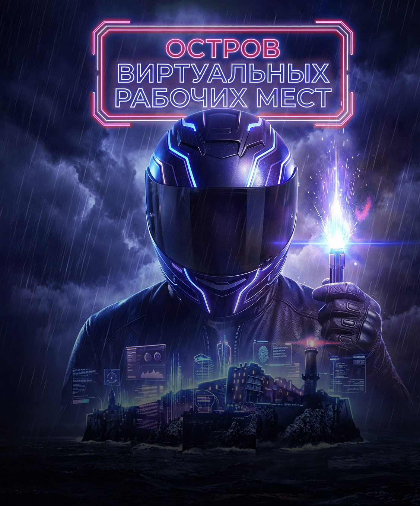

К афише
Остров виртуальных рабочих мест
Смотреть фильм
Остров виртуальных рабочих мест
Организация виртуальных рабочих мест
Сотрудник крупной компании отправляется в командировку на удаленный остров в северных морях. Отсутствие стабильной
связи и большое количество задач чуть не сводит его с ума. Компании срочно нужно решение, для организации удаленной
работы, чтобы не потерять сотрудника и не увеличить нагрузку на инфраструктуру.
В главных ролях:
(Виртуализация)
(Виртуальные рабочие столы (VDI))